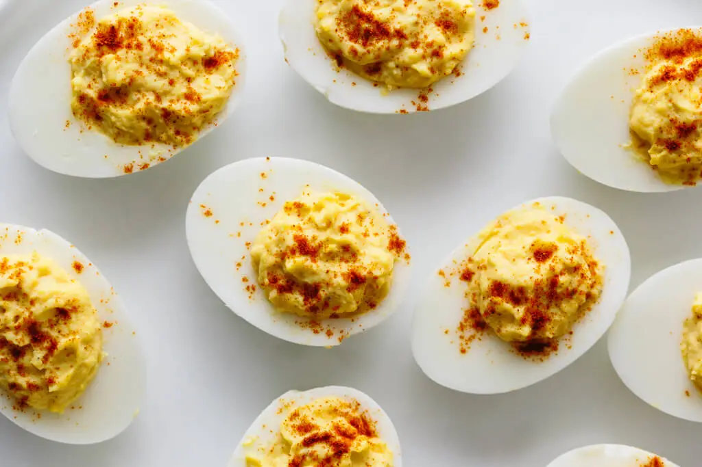

Deviled Eggs

Description
Deviled eggs are an easy and popular dish that can be made within
an hour. Perfect for potlucks, family gatherings, or any occasion
where you need to bring food, these eggs are a good thing to have in
your recipe book.
Ingredients
- 6 eggs
- 3 TBS mayo
- 1 tsp dijon mustard
- 1 tsp apple cider vinegar
- Salt and pepper to taste
- Paprika for garnish
Instructions
- Boil your eggs
- Scoop yolks out of the hard boiled eggs and place them in a bowl
-
Mash yolks with a fork. Add mayo, mustard, vinegar, salt and pepper
to yolks and stir until smooth
- Scoop yolk mixture back into egg whites. Garnish with paprika.